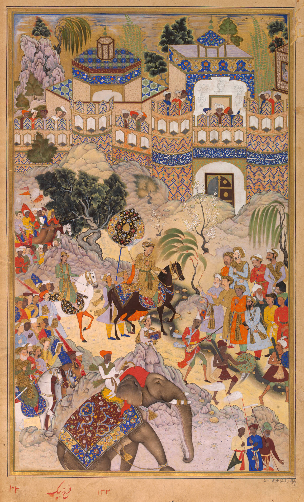

Europe


Western art has seen many changes throughout its many years if existence. Most painings up until the mid-19th century were made in service to the church or royalty. As Europe started industrialising, painters started to move away from creating traditional pieces of art, such as The Scream, to art which addresses social issues faced by people of middle and lower classes.
An overview of paintings styles in Europe are:
- Expressionism
- As indicated by the word 'expression', expressionists use emotion and blend it with reality. This is done by using unusual mixtures of colours to invoke the artists' feelings on the viewer.
- Abstract
- As one of the more recent art styles to rise in popularity, many viewers feel it is an effortless mixture of colours without any meaning.
- Traditional
- Most popular during the Renaisance, these pieces would be used in churches as large murals or even as small portraits. Traditional art takes reality as it is, using its accuracy and detail to amaze viewers.
Asia

The Great Wave off Kanagawa by Katsushika Hokusai

Akbar's entry into Surat by Farrukh Beg

Mandala of Chandra
Art from the Asian continents vary depending on the region they originate from. It is less unified than European art because each country has its own distinct culture.
This is art from three regions in Asia:
- Japan
- Many well-known pieces from this region were created during Japan's feudal era. Art from this period was largely done on a woodblock print. Ukiyo-e would use this style to depict tantalising characters such as sumo-wrestlers, samurai or beautiful women.
- Mughal India
- Thanks to the Mughal emperor, Akbar, Mughal art was recorded in manuscripts and kept in libraries. Mughal art would require a team of artists who specialised in caligraphy, bookbinding, or illumimnation.
- Traditional
- Most popular during the Renaisance, these pieces would be used in churches as large murals or even as small portraits. Traditional art takes reality as it is, using its accuracy and detail to amaze viewers.